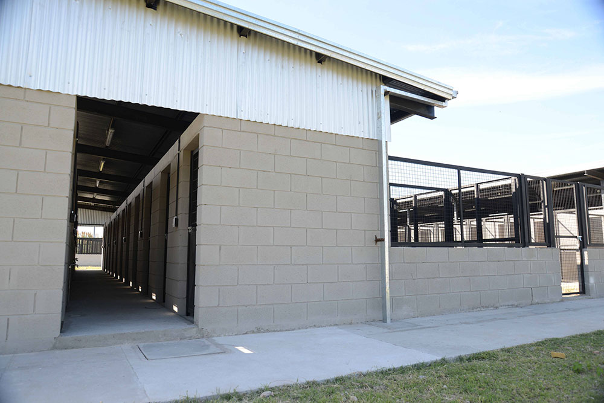

Se lleva a cabo una campaña permanente de adopción de animales domésticos, cuyo número ha crecido en
el
transcurso de los años. Previo control sanitario del animal, se procura la búsqueda de un hogar y
dueño
responsable.
Esta campaña se refuerza principalmente a través del trabajo con las escuelas de la ciudad. Se
aborda
así el
problema social de los animales en la calle, los accidentes que bajo esta situación pueden ocasionar
y
el
estado de enfermedad en el que muchas veces se encuentran.
La promoción y concientización del cuidado responsable de las mascotas, es acompañada por visitas
guiadas a
las instalaciones del IMuSA.
Se trata de un centro de adopción de perros con capacidad para 120 animales. El centro ocupa un terreno
de 8.380 m² en el que se distribuyen control de ingreso, un sector administrativo, cinco bloques de
caniles, estacionamiento vehicular, calles y veredas internas que facilitan la interconexión entre las
partes. Además, cuenta con un consultorio veterinario para la atención de canes alojados.
Cada uno de los pabellones tiene una capacidad para 24 caniles (en cada uno se pueden alojar 2 animales)
y posee circulación interna y externa, espacio recreativo, ventilación adecuada y todos los elementos
necesarios para asegurar la correcta limpieza de los mismos. Además, dos de los caniles están preparados
para la atención de animales que requieran de cuidados especiales. Cada uno de los caniles tiene una
superficie de 150 m², completando un total de 750 m², la superficie cubierta es de 900 m² y el área
recreativa abierta para animales es de 1.400 m².
Además fue contemplado un sector para un estacionamiento con una capacidad para 14 vehículos. Todas
estas áreas están vinculadas con calles y veredas consolidadas que permiten una fluida relación entre
ellas.

El IMuSA cuenta con lugar físico adecuado para la tenencia de animales domésticos que han sido
abandonados por sus dueños o que han sufrido algún accidente en la vía publica a consecuencia de
vivir
allí
El tratamiento primario, de esterilización y/o curaciones, es realizado en la sede IMuSA y luego los
animales son enviados al anexo para su recuperación final tanto nutricional como psicológica.
Cuando el animal se considera recuperado, es ofrecido en adopción. La adopción se realiza in situ,
concientizando a las personas para que asuman la responsabilidad de la atención.
Muchos animales, por vejez, invalidez o por padecer algún tipo de mutilación, no son deseados por el
común de la gente, por lo que son cuidados hasta su deceso natural.
El sector de caniles para perros es elogiado y copiado por otras municipalidades del país por su
formato
cómodo y amplio tanto para los animales como para el personal que los atiende.